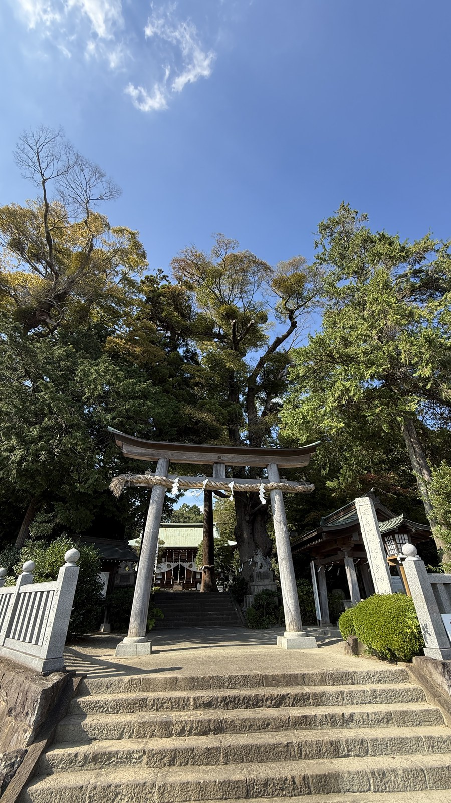
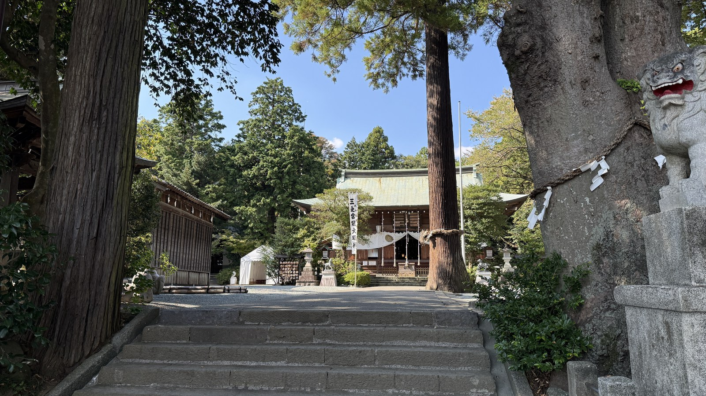
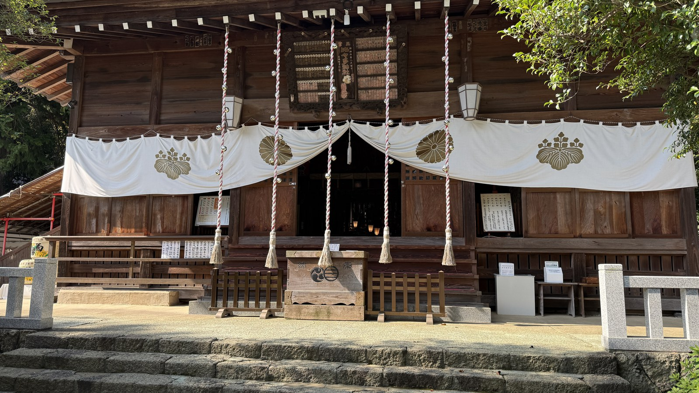
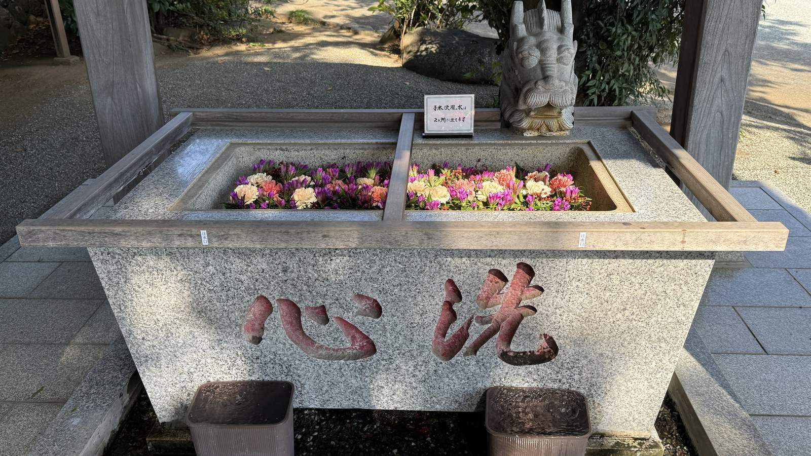
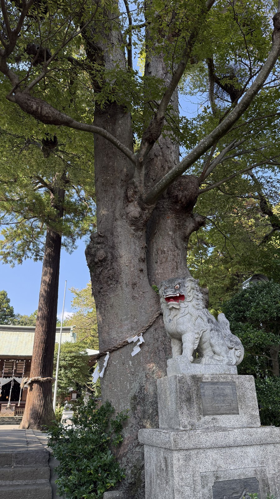
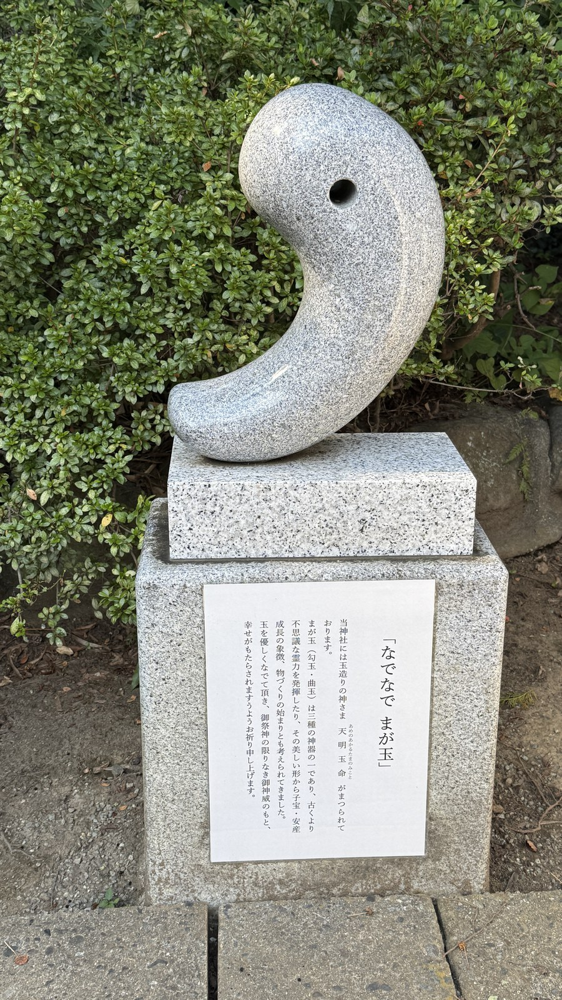
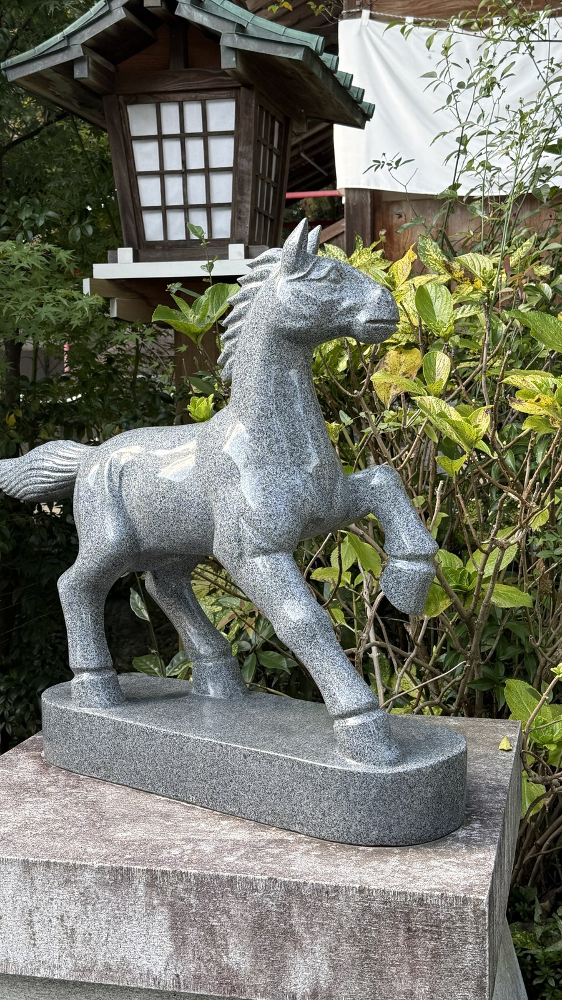
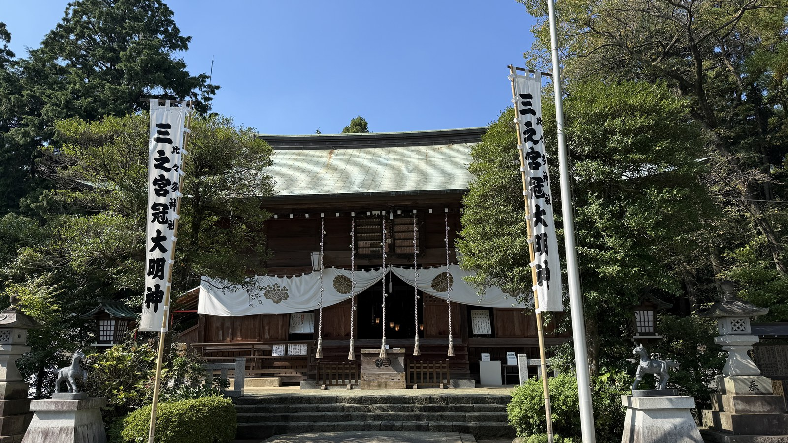

実際に参拝・写真はすべて自前
History
由緒・創建
相模国の三宮。平安時代の『延喜式』の神名帳に載る式内社（小社）。

石段の上、注連縄を張った鳥居の奥に社殿が見える。
Highlights
見どころ
石段の上の鳥居をくぐると、大木が並ぶ参道が拝殿へ続く。根元に狛犬が控える大木には注連縄が巻かれている。手水舎の水盤には花が浮かび、「洗心」の文字が刻まれている。境内には、曲がった玉の形をした石像「なでなでまが玉」と、石の馬もある。

石段を上った先。木立の奥に拝殿が見える。

拝殿の正面。鈴の縄と、神紋の幕。

手水舎。水盤には花が浮かび、手前に「洗心」の文字が刻まれている。

大木の根元に控える狛犬。木には注連縄が巻かれている。

「なでなでまが玉」。曲がった玉の形をした石像。

石の馬。奥に灯籠が見える。

拝殿の左右に立つ幟には「三之宮」の文字がある。